Pilz
GrowBox.
Eine Growbox, die aussieht wie ein Küchengerät, sich selbst um Licht, Feuchte und Wasser kümmert und an der jeder mit einem Blick sieht, ob alles gut ist.
Mensch-Maschine-Interaktion · Prof. Zagel
Hochschule Coburg · WS 2026/27
Felix Zimmermann · [Namen Team]
Was in diesem
Booklet steckt.
Erst für wen, dann wie die Box entstanden ist, zuletzt wie man sie bedient. Jede Entscheidung steht mit dem Grund aus der Vorlesung und dem Nachteil, den wir dafür in Kauf nehmen.
- 03Für jeden gemacht.Zielgruppe · Ingrid und App-Nutzer
- 04Alles begann mit einer Mikrowelle.Die erste Skizze
- 05Vom Aquarium zur Mikrowelle.Konzeptweg Box V1 → V3 · Abwägung
- 06Wie eine Mikrowelle. Nur ohne Knopfsalat.Aufbau V3 annotiert
- 07Vom Papier ins CAD.Konstruktion · zwei Module
- 08Vom Rohdruck zum Prototyp.Prototyp · FabLab
- 0917 Stände. Nicht alles blieb.3D-Modell · Ideen getestet
- 10Drei Ideen. Eine gewählt.Konzeptweg Bedienfeld v1 → v7
- 11Ein Taster. Eine Bedeutung.Entscheidungen an der Box · Abwägung
- 12Ein Blick. Eine Aussage.Das Startbild
- 13Warum Blau statt Schwarz?Farbe · Abwägung
- 14Eine Warnung. Ein Knopf.Ingrid handelt
- 15Die Hürde passt zum Risiko.Fehler vermeiden
- 16Bewusst weggelassen.Abwägungen und Grenzen
Für jeden gemacht.
Technik nur, wenn man will.
Die Box regelt Klima, Licht und Wasser selbst, und an der Box sieht jeder auf einen Blick, ob alles gut ist. Wer tiefer einsteigen will, findet in der App alle technischen Details.
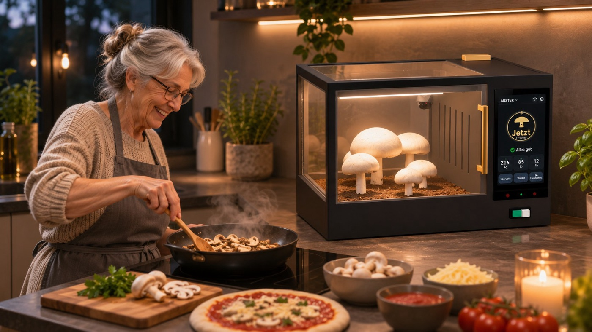
A · An der Box · StandardIngrid, 72: einfach bedienbar
Lesebrille, zitternde Hände, kein Handy an der Box. Was Ingrid bedienen kann, kann jeder.
- ✓Ein Blick: Alles gut, Warnung oder Erntebereit
- ✓Große Kacheln, Touch-Ziele ab 44 pt
- ✓Ein echter Taster fürs Licht
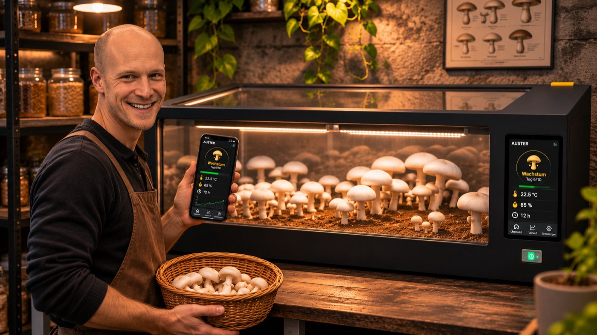
B · In der App · OptionPower-User: Graphen und eigene Werte
Erfahrener Pilzzüchter, der alles trackt und auch unterwegs wissen will, wie es steht.
- →Verläufe zu Temperatur, Feuchte, Licht, Tank
- →Werte anpassen, als eigene Sorte speichern
- →Meldungen und Live-Kamera unterwegs
- AUTOFrischluft · Luftfeuchte
- AUTOWärme · Licht 8–20 Uhr
- 01Nachfüllen · ca. 1× pro Woche
- 02Ernten · wenn der Ring voll ist
- 03Neu ansetzen · Zuchtset rein
Alles begann
mit einer Mikrowelle.
Die Box sollte nicht nach Labor aussehen, sondern nach Küche. Also habe ich mir die Front einer Mikrowelle geliehen: links das Fenster, rechts das Bedienfeld. Dahinter verschwindet alles, was Technik ist.
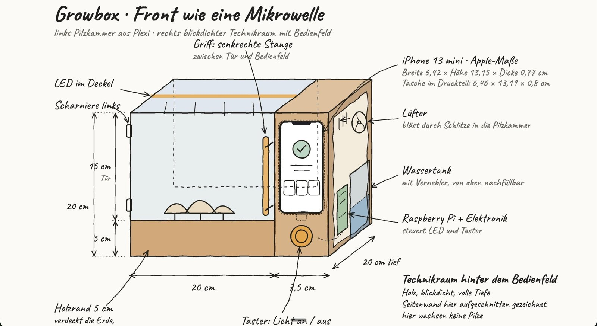
Pilzkammer
Plexiglas ringsum, damit man beim Wachsen zusieht. Ein 5 cm hoher Sockel verdeckt die Erde.
Technikraum
Display, Wassertank mit Vernebler, Lüfter und Raspberry Pi. Von außen blickdicht.
Vom Aquarium
zur Mikrowelle.
Die Form stand nicht von Anfang an fest. In drei Schritten wurden aus zwei Geräten eines, und aus der kleinen Box eine, in der Wasser und Technik getrennt Platz haben.
| Entscheidung | Grund (Folie) | Nachteil, den wir in Kauf nehmen |
|---|---|---|
| V1 → V2: ein Gerät statt zwei | Das Display hat einen festen Platz, kein Kabel liegt dazwischen. Die Form einer Mikrowelle kennt jeder (mentales Modell 56, Mikrowelle 8). | Der Technikraum kostet Breite. |
| iPhone statt 5″-Touchdisplay | Scharfes Display, die Web-Oberfläche lässt sich am Laptop testen und direkt zeigen (Prototypen 119–125). | Das iPhone ist nur Platzhalter für ein festes Display. |
| V2 → V3: größer, Tank mit Sichtfenster | Wasser unten, Elektronik oben, dazwischen eine Trennwand (Murphy 61). Die Linie im Fenster entspricht dem Balken auf dem Display (Mapping 77–79). | Mehr Stellfläche in der Küche. |
| LED im Rahmen statt im Deckel | Der Deckel bleibt kabelfrei und abnehmbar. Alle Teile ≤ 250 mm passen aufs Druckbett. | Ein LED-Kanal in vier Profilen. |
Wie eine Mikrowelle.
Nur ohne Knopfsalat.
Folie 8 zeigt eine Mikrowelle, die niemand bedienen kann. V3 hat dieselbe Grundform, aber auf 33,5 × 25 × 20 cm nur drei Dinge zum Bedienen: ein Display, einen Taster, eine Einfüllöffnung.
- 1PilzkammerPlexiglas, Tür links angeschlagen. Man sieht die Pilze, ohne zu öffnen. Mikrowelle · 8
- 2DisplayEin fest eingebautes iPhone zeigt den Zustand auf einen Blick. Systemstatus sichtbar · 130
- 3TasterBeige, Ø 3 cm, Licht-Symbol. Schaltet nur das Licht. Affordance · 72–74
- 4Tank-SichtfensterDie Linie zeigt dasselbe wie der Balken „Wassertank“ auf dem Display. Mapping · 77–79
- 5EinfüllöffnungOben hinten, Ø 4 cm: eingießen wie bei einer Kaffeemaschine, weit weg vom Display. Wasser unten, Elektronik oben. Murphy · 61
Vom Papier
ins CAD.
In [CAD-Programm] habe ich die Skizze in zwei Module übersetzt, die nebeneinander stehen und sich einzeln drucken lassen. Jedes Maß musste passen, bevor der Drucker anläuft.
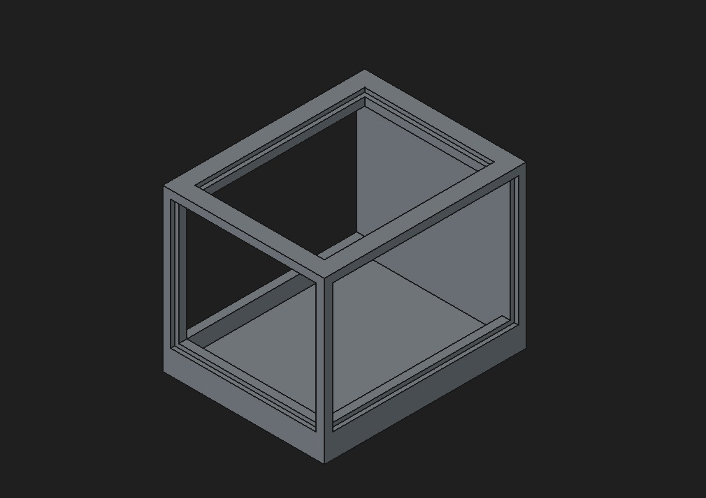

Modul 1 · Pilzkammer
Ein Rahmen mit umlaufenden Nuten, in die das Plexiglas geschoben wird. Unten der geschlossene Sockel für die Erde.
Modul 2 · Technikraum
Eine geschlossene Säule mit eingelassener Display-Tasche und zwei Fächern oben, eins davon für den Wassertank.
Spiel pro Seite in der Display-Tasche. Das iPhone 13 mini misst 6,42 × 13,15 × 0,77 cm, die Tasche 6,46 × 13,19 × 0,8 cm. Es sitzt fest und lässt sich trotzdem herausnehmen.
Vom Rohdruck
zum Prototyp.
Beide Module habe ich im FabLab am Lucas-Cranach-Campus in schwarzem PLA gedruckt. Danach kamen Plexiglasscheiben, ein Türgriff im Mikrowellen-Stil und der Taster dazu.
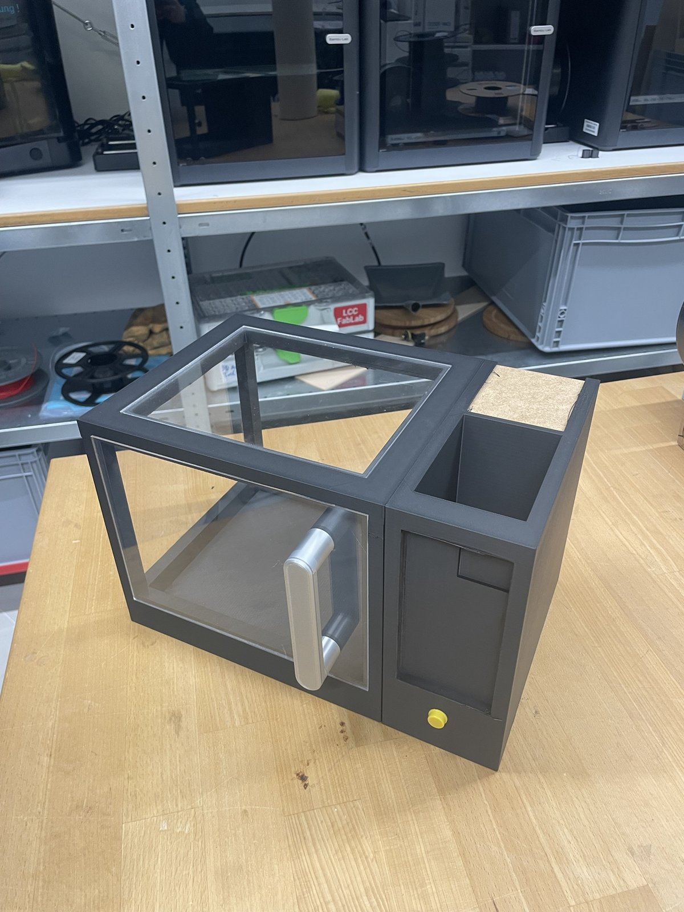
Nachher · mit Plexi, Griff, Taster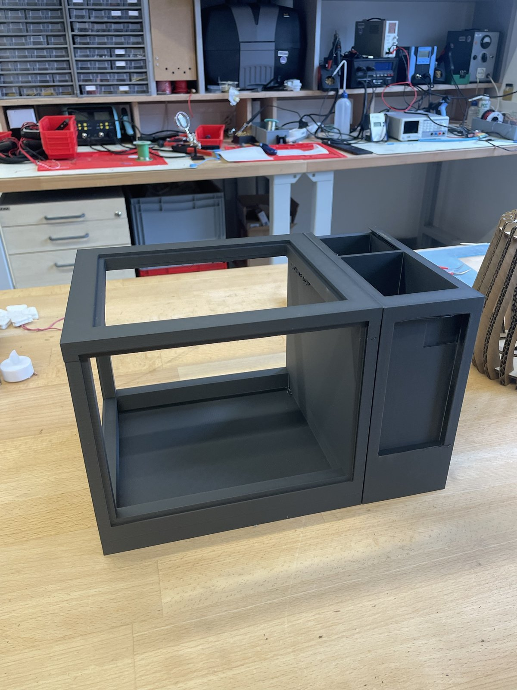
Vorher · Rohdruck
Was der Prototyp gezeigt hat
- ✓Kammer und Technikraum passen sauber nebeneinander.
- ✓Die Display-Tasche sitzt, das Handy lässt sich tauschen.
- →Die Glasnuten brauchen etwas mehr Spiel.
- →Überhänge in der Kammer brauchen Nacharbeit.
17 Stände.
Nicht alles blieb.
Nach dem Druck entstand die Box als drehbares 3D-Modell. So ließen sich Ideen in Minuten testen statt in Druckstunden. Danach musste sich jede Idee an der Zielgruppe messen: Was Ingrid hilft, blieb.
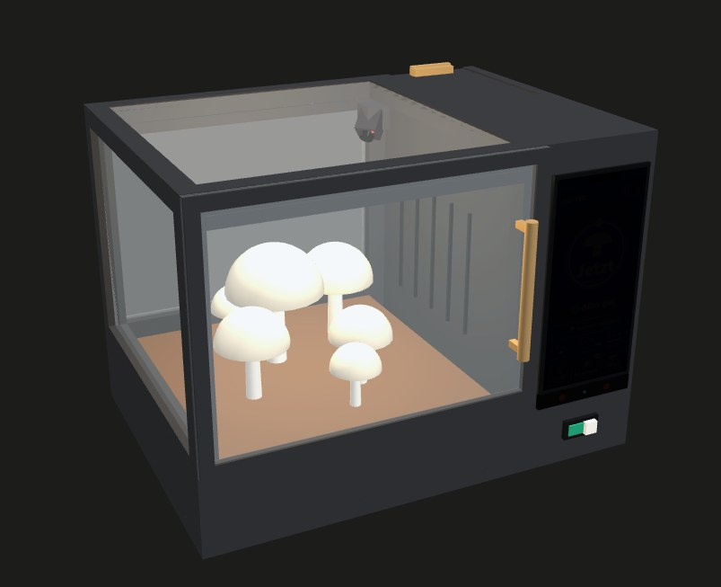
3D-Modell · Stand 17 · Maße nur zum Anschauen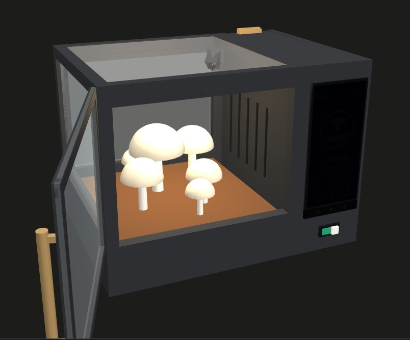
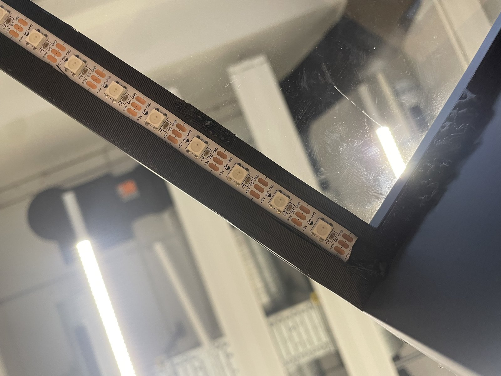
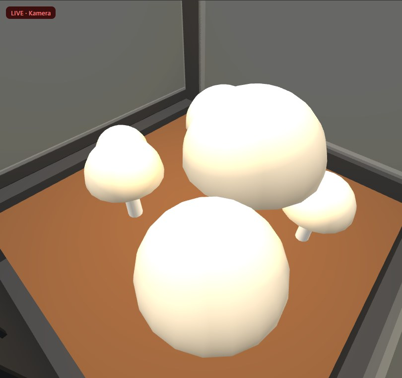
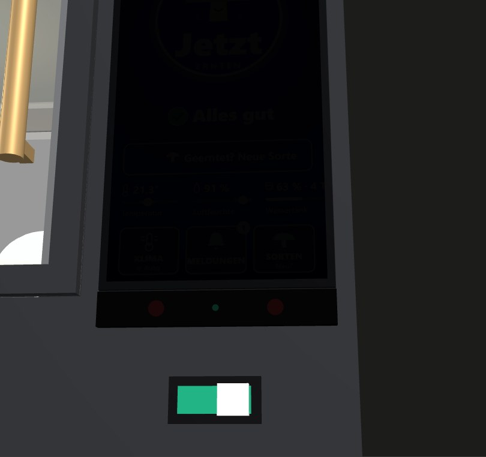
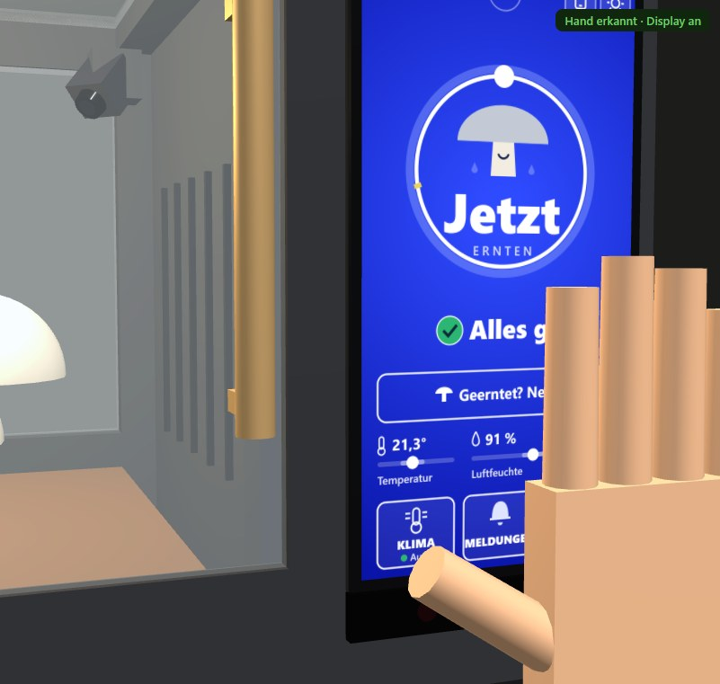
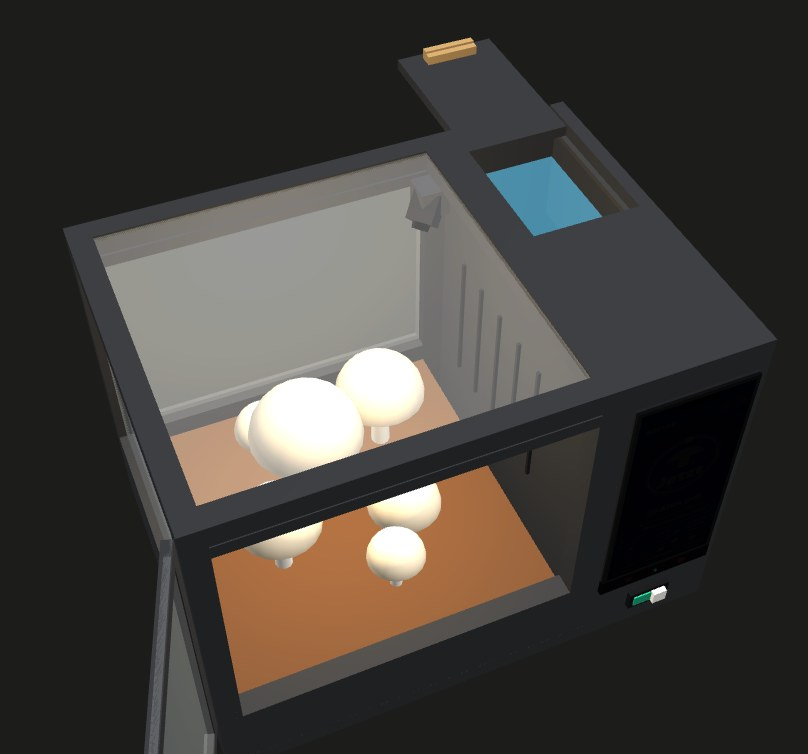
Drei Ideen.
Eine gewählt.
Vor dem ersten Bildschirm standen drei Leitideen. Gewählt haben wir die, bei der Ingrid am wenigsten lernen muss. Aus den beiden anderen blieb je ein Baustein.
Pilz-Begleiter
Ein Pilz als Figur mit Stimmungen und Spielelementen.
Lenkt vom Zustand ab. Geblieben: der Pilz wächst im Ring (Progression, G 10).
Radikal einfach
Ein Zustand aus Form, Farbe und Text, darunter wenige große Kacheln.
Ein Blick genügt: wahrnehmen, verstehen, handeln (Model Human Processor 16–17).
Physisch zuerst
Taster, Drehknopf und LED-Ring statt Display.
Wieder Knopfsalat (Mikrowelle 8). Geblieben: ein Taster fürs Licht.

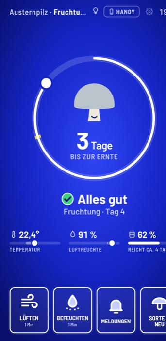

- v127.10.Helle Liste, Licht noch als Kachel
- v329.10.Ring bis zur Ernte, Status als Symbol
- v429.10.Automatik sichtbar: Box regelt, Mensch sieht es
- v502.11.Abgleich mit den Folien: 5 → 3 Kacheln, größere Schrift
- v602.11.Sorten, 44 pt, Kontrast 6,4 : 1
- v705.11.Erntebereit, Pilz wächst, Standby-Punkt
Ein Taster.
Eine Bedeutung.
Von der ersten zur letzten Zeichnung von V3 kam fast nichts dazu. Die Teile bekamen klare Bedeutungen: Was man anfassen soll, ist beige. Orange heißt überall Warnung.
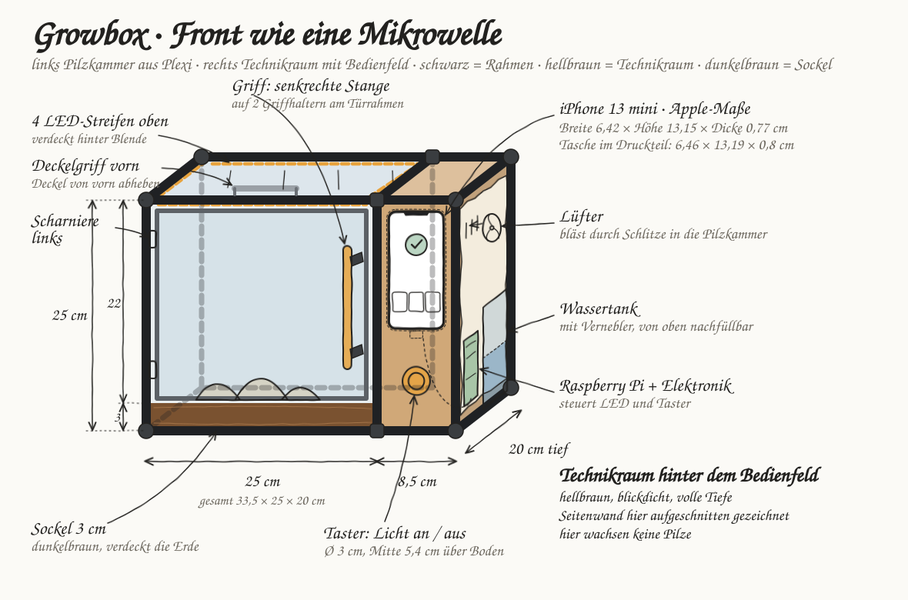
| Entscheidung | Grund (Folie) | Nachteil, den wir in Kauf nehmen |
|---|---|---|
| Taster schaltet nur das Licht | Druckpunkt spürt der Finger (Homunculus 33), großes Ziel trifft die zitternde Hand (Speed-Accuracy 49), Knopf zeigt „drück mich“ (Affordance 72–74) | Alles andere läuft über das Display. |
| Taster weckt nicht auch das Display | Eine Handlung mit zwei Wirkungen würde beim Licht-Ausschalten das Display mit ausschalten (Modusfehler 60). | Kein Knopf, der „alles“ macht. |
| Taster und Griffe beige statt orange | Orange heißt auf dem Display „Warnung“. Eine Farbe, eine Bedeutung (Konsistenz 80). | Ein oranger Taster wäre auffälliger. |
| Kein Warnlicht an der Box | Die Warnung zeigt der orange Punkt auf dem Display, kein zweiter Kanal mit eigener Logik. | Fällt das Display aus, gibt es keine Warnung. |
| Tank vorn mit Sichtfenster (v2) | Füllstandslinie entspricht dem Balken auf dem Display (Mapping 77–79). | Der Technikraum braucht eine Trennwand. |
Ein Blick.
Eine Aussage.
Aus der Ferne sieht Ingrid, ob etwas zu tun ist. Aus der Nähe sieht sie, was. Jede Information steht genau einmal da.
 1
2
3
4
5
1
2
3
4
5
- 1WarnpunktLeuchtet orange bei einer Warnung. Im Standby blinkt nur er. präattentiv · 26–27
- 2Ring = FortschrittTage bis zur Ernte. Der Pilz wächst in drei Stufen. Progression · Flow (Gamification)
- 3StatusImmer Form + Farbe + Text, nie Farbe allein. Farbsehschwäche · 23
- 4Drei WerteImmer Zahl, Balken und Name. Der Tank als Füllstand. Konsistenz · 80
- 5Drei KachelnGroße Ziele. Ein Rahmen heißt: drückbar. Fitts 50 · Affordance 72–73
grüner Kreis mit Haken

gelbes Dreieck, Text und ein Knopf

beiger Kreis mit Pilz
Warum Blau
statt Schwarz?
Das wurde in der Präsentation gefragt. Die Antwort: Schwarz hat schon eine Bedeutung. Schwarz heißt Standby, Blau heißt die Box läuft.


| Entscheidung | Grund (Folie) | Nachteil, den wir in Kauf nehmen |
|---|---|---|
| Blau im Betrieb | Schwarz ist für Standby reserviert. Blau als Fläche, nicht als Schrift (Blau-Zapfen 20, 22). | Wer Schwarz lieber mag, muss es einstellen (Hoher Kontrast, 66). |
| Nur der Warnpunkt blinkt, nur im Standby | Bewegung fällt sofort auf, ohne Suchen (präattentiv 26–27). | Eine Warnung im laufenden Betrieb blinkt nicht. |
| Bewusst minimalistisch | Keine Uhr, drei Kacheln statt sechs, Seltenes hinter dem Zahnrad (Nielsen: minimalist design 130). | Urlaub, Sprache und Hilfe liegen einen Tipp tiefer. |
Eine Warnung.
Ein Knopf.
Ingrid muss nichts einstellen. Sie handelt nur, wenn die Box sie braucht, und bekommt auf jede Handlung sofort eine Rückmeldung.


Die Hürde passt
zum Risiko.
Wer mitten im Wachstum neu ansetzt, verliert seine Pilze. Wer nach der Ernte neu ansetzt, verliert nichts. Deshalb fragt die Box unterschiedlich streng.


Hürde nach Risiko
| mitten im Wachstum | Hinweis → 2 s halten → 14 Tage Rückweg |
| nach der Ernte | nur „Sicher?“ |
Murphy · 61 · Nielsen: Fehler vermeiden · 130
Erst Übersicht, dann Detail
- Eigene Sorte an der Box nur nach der Ernte.
- Werte eingeklappt, feste Schritte mit Grenzen.
- Wer mehr will, zoomt in der App hinein. Zoomable UI · 101–102
Bewusst weggelassen.
Und was noch offen ist.
Ein einfaches Bedienfeld entsteht vor allem durch das, was fehlt. Jede Lücke ist eine Entscheidung, und jede hat einen Preis.
| Weggelassen | Grund (Folie) | Nachteil, den wir in Kauf nehmen |
|---|---|---|
| Keine Uhr im Display | Für die Pilze unwichtig, jede Angabe mehr lenkt ab (minimalist design 130). | Wer die Zeit sucht, schaut woanders hin. |
| Kein Eingriff ins Klima an der Box | Jede Ausnahme ist ein Zustand, den man vergisst (Modusfehler 60, Murphy 61). | „1 Min lüften“ gibt es nur in der App. |
| Kein Ruhemodus, kein Handsensor | Das Display bleibt an, der Warnpunkt ist aus 3 m sichtbar (präattentiv 26–27). | Das Display braucht dauerhaft Strom. |
| Kein Warnlicht an der Box | Ein Kanal für Warnungen, der orange Punkt reicht (Konsistenz 80). | Fällt das Display aus, sieht Ingrid keine Warnung. |
| Verläufe nur in der App | Erst Übersicht, dann Detail (Zoomable UI 101–102). | Die Box zeigt nur das Jetzt. |
Geprüft
- ✓Nielsen-Heuristiken: 9 von 10 erfüllt (130). Es fehlt „Help and documentation“.
- ✓Warntext-Kontrast 6,4 : 1, vorher 2,8 : 1 (66).
- ✓Farbsimulation Rot-Grün: Status nie nur über Farbe (23).
Grenzen
- –Die Personas sind Annahmen, nicht befragt.
- –Messwerte sind simuliert, echt sind Taster und LED.
- –Noch kein Test mit echten Nutzern.